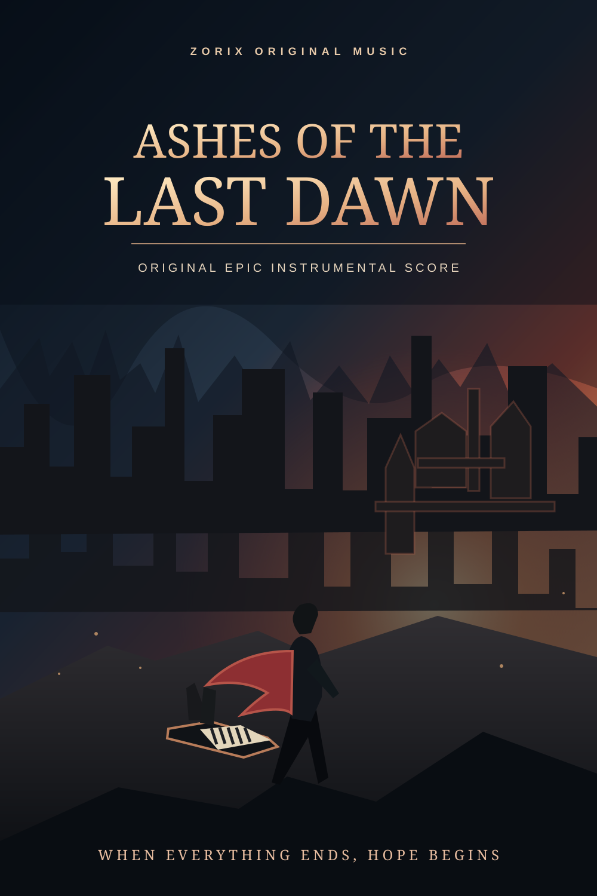

ZORIX ORIGINAL MUSIC · EPIC CINEMATIC SCORE
ASHES OF THE LAST DAWN
When everything ends, hope begins.
Un brano strumentale originale che attraversa la perdita, il dolore e la rinascita. Il pianoforte solitario lascia spazio al violoncello, all'orchestra, alla chitarra elettrica e alle grandi percussioni, prima di ritrovare il silenzio.
Scopri il brano ↓IL BRANO
Ascolta la colonna sonora
Ashes of the Last Dawn
ZORIX Original Music · 03:00 · Pianoforte, violoncello, orchestra, chitarra elettrica e percussioni
Impossibile riprodurre il file audio. Riprova o verifica la connessione.
Traccia strumentale, senza canto né testo. La durata effettiva del file sorgente è 3:00.
LA STORIA DIETRO LA MUSICA
The last light is worth fighting for.
Dopo il crollo delle ultime città, un viaggiatore attraversa le rovine portando con sé il ricordo della persona che non ha potuto salvare. In una stazione abbandonata trova un pianoforte ancora intatto: pochi accordi risvegliano il mondo perduto, le risate, le promesse, la vita di prima.
Il dolore diventa rabbia, poi una scelta. Quando il cielo si oscura e ogni speranza sembra svanire, il viaggiatore decide di accendere un segnale per gli ultimi sopravvissuti. Non per cancellare la perdita, ma perché nessun altro debba affrontare la fine da solo.
All'alba, fra il fumo, il primo raggio di luce attraversa le rovine. Il mondo non è guarito. Ma qualcuno è ancora qui, e ha deciso di ricominciare.
Questa storia è la narrazione originale immaginata per accompagnare il brano, non la trama di un film già pubblicato.